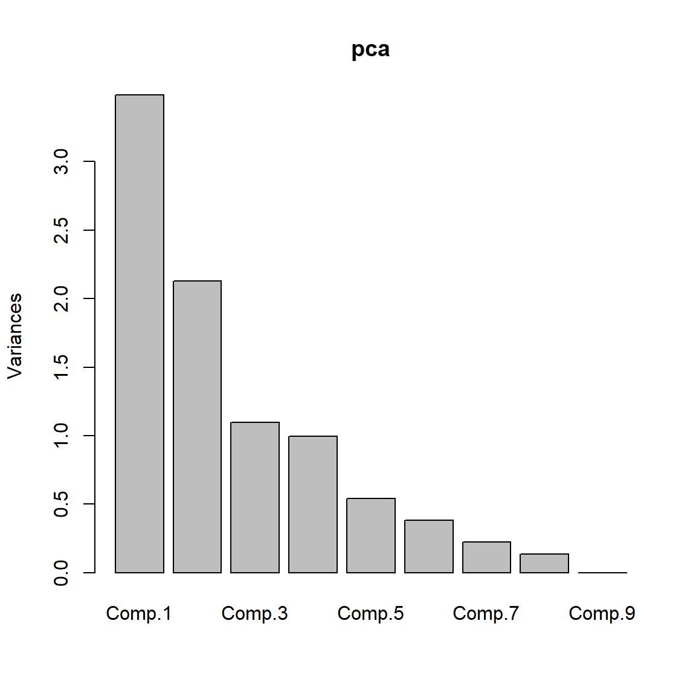

PW 6
The Iris Dataset
The Iris flower dataset or Fisher’s Iris dataset is a multivariate data set introduced by the British statistician and biologist Ronald Fisher in his 1936 paper (FISHER 1936).
The data set consists of 50 samples from each of three species of Iris. Four features were measured from each sample.
The three species in the Iris dataset are:
- Iris-setosa (\(n_1=50\))
- Iris-versicolor (\(n_2=50\))
- Iris-virginica (\(n_3=50\))
And the four features in Iris dataset are:
- sepal length in cm
- sepal width in cm
- petal length in cm
- petal width in cm

Loading Data
1. Download the iris dataset from here and import it into .
Exploratory analysis
2. Compare the means and the quartiles of the 3 different flower classes for the 4 different features (Plot 4 boxplots into the same figure).
Hint: you can use par(mfrow=c(2,2)) to show multiple plots on the same figure (\(2 \times 2\) plots here). Like follows:

3. To explore how the 3 different flower classes are distributed along the 4 different features, visualize them via histograms using the following code.
# Let's use the ggplot2 library
# ggplot2 is the most advanced package for data visualization
# gg corresponds to The Grammar of Graphics.
library(ggplot2) #of course you must install it first if you don't have it already
# histogram of sepal_length
ggplot(iris, aes(x=sepal_length, fill=class)) +
geom_histogram(binwidth=.2, alpha=.5)
# histogram of sepal_width
ggplot(iris, aes(x=sepal_width, fill=class)) +
geom_histogram(binwidth=.2, alpha=.5)
# histogram of petal_length
ggplot(iris, aes(x=petal_length, fill=class)) +
geom_histogram(binwidth=.2, alpha=.5)
# histogram of petal_width
ggplot(iris, aes(x=petal_width, fill=class)) +
geom_histogram(binwidth=.2, alpha=.5)
PCA using princomp()
Both princomp() and prcomp() are built-in functions. They both perform PCA.
4. Apply a PCA on the Iris dataset using the princomp() function and interpret the results.
pcairis=princomp(iris[,-5], cor=T)
# Note that we take only the numerical columns to apply PCA.
# now pcairis is a R object of type princomp
# To display the internal structure of pcairis
str(pcairis)
#ans> List of 7
#ans> $ sdev : Named num [1:4] 1.706 0.96 0.384 0.144
#ans> ..- attr(*, "names")= chr [1:4] "Comp.1" "Comp.2" "Comp.3" "Comp.4"
#ans> $ loadings: 'loadings' num [1:4, 1:4] 0.522 -0.263 0.581 0.566 0.372 ...
#ans> ..- attr(*, "dimnames")=List of 2
#ans> .. ..$ : chr [1:4] "sepal_length" "sepal_width" "petal_length" "petal_width"
#ans> .. ..$ : chr [1:4] "Comp.1" "Comp.2" "Comp.3" "Comp.4"
#ans> $ center : Named num [1:4] 5.84 3.05 3.76 1.2
#ans> ..- attr(*, "names")= chr [1:4] "sepal_length" "sepal_width" "petal_length" "petal_width"
#ans> $ scale : Named num [1:4] 0.825 0.432 1.759 0.761
#ans> ..- attr(*, "names")= chr [1:4] "sepal_length" "sepal_width" "petal_length" "petal_width"
#ans> $ n.obs : int 150
#ans> $ scores : num [1:150, 1:4] -2.26 -2.09 -2.37 -2.3 -2.39 ...
#ans> ..- attr(*, "dimnames")=List of 2
#ans> .. ..$ : NULL
#ans> .. ..$ : chr [1:4] "Comp.1" "Comp.2" "Comp.3" "Comp.4"
#ans> $ call : language princomp(x = iris[, -5], cor = T)
#ans> - attr(*, "class")= chr "princomp"
# To see the variance explained by the the pcs
summary(pcairis)
#ans> Importance of components:
#ans> Comp.1 Comp.2 Comp.3 Comp.4
#ans> Standard deviation 1.706 0.960 0.3839 0.14355
#ans> Proportion of Variance 0.728 0.230 0.0368 0.00515
#ans> Cumulative Proportion 0.728 0.958 0.9948 1.00000
# To plot the variance explained by each pc
plot(pcairis) 
# To plot together the scores for PC1 and PC2 and the
# variables expressed in terms of PC1 and PC2.
biplot(pcairis) 
Deeper PCA using factoextra package
To help in the interpretation and in the visualization of PCA we are going to use the package named factoextra.
No matter which function or package you decide to use for computing principal component methods, the factoextra package can help to extract easily, in a human readable data format, the analysis results from the different functions mentioned above. factoextra provides also convenient solutions to create ggplot2 based beautiful graphs.
You can take a look at this link for a detailed example.
5. Using factoextra packag plot the following:
- The scree plot.
- The graph of individuals.
- The graph of variables.
- The biplot graph.
- The contributions of the variables to the first 2 principal components.
Step-by-step PCA
In order to understand how PCA works, let’s implement it step-by-step.
Summary of the PCA Approach:
- Standardize the data.
- Obtain the Eigenvectors and Eigenvalues from the covariance matrix or correlation matrix.
- Sort eigenvalues in descending order and choose the \(k\) eigenvectors that correspond to the \(k\) largest eigenvalues, where \(k\) is the number of dimensions of the new feature subspace (\(k \le p\)).
- Construct the projection matrix \(\mathbf{A}\) from the selected \(k\) eigenvectors.
- Transform the original dataset \(X\) via \(\mathbf{A}\) to obtain a \(k\)-dimensional feature subspace \(\mathbf{Y}\).
6. First step, split the iris dataset into data \(X\) and class labels \(y\).
The iris dataset is now stored in form of a \(150 \times 4\) matrix where the columns are the different features, and every row represents a separate flower sample. Each sample row \(X^i\) can be pictured as a 4-dimensional vector
\[ (X^i)^T = \begin{pmatrix} X_1^i \\ X_2^i \\ X_3^i \\ X_4^i \end{pmatrix} = \begin{pmatrix} \text{sepal length} \\ \text{sepal width} \\\text{petal length} \\ \text{petal width} \end{pmatrix}\]
Eigendecomposition - Computing Eigenvectors and Eigenvalues
The eigenvectors and eigenvalues of a covariance (or correlation) matrix represent the “core” of a PCA: The eigenvectors (principal components) determine the directions of the new feature space, and the eigenvalues determine their magnitude. In other words, the eigenvalues explain the variance of the data along the new feature axes.
Standardizing
7. Scale the 4 features. Store the scaled matrix into a new one (for example, name it X_scaled).
Covariance Matrix
8. The classic approach to PCA is to perform the eigendecomposition on the covariance matrix \(\Sigma\), which is a \(p\times p\) matrix where each element represents the covariance between two features. Compute the Covariance Matrix of the scaled features (Print the results).
We can summarize the calculation of the covariance matrix via the following matrix equation: \[ \Sigma = \frac{1}{n-1} \left( (\mathbf{X} - \mathbf{\bar{X}})^T\;(\mathbf{X} - \mathbf{\bar{X}}) \right) \] where \(\mathbf{\bar{X}}\) is the mean vector \(\mathbf{\bar{X}} = \frac{1}{n} \sum\limits_{k=1}^n x_{k}\).
The mean vector is a \(p\)-dimensional vector where each value in this vector represents the sample mean of a feature column in the dataset.
9. Perform an eigendecomposition on the covariance matrix. Compute the Eigenvectors and the Eigenvalues (you can use the eigen() function). What do you obtain?
Correlation Matrix
Especially, in the field of “Finance”, the correlation matrix typically used instead of the covariance matrix. However, the eigendecomposition of the covariance matrix (if the input data was standardized) yields the same results as a eigendecomposition on the correlation matrix, since the correlation matrix can be understood as the normalized covariance matrix.
10. Perform an eigendecomposition of the standardized data based on the correlation matrix.
11. Perform an eigendecomposition of the raw data based on the correlation matrix. Compare the obtained results with the previous question.
We should see that all three approaches yield the same eigenvectors and eigenvalue pairs:
- Eigendecomposition of the covariance matrix after standardizing the data.
- Eigendecomposition of the correlation matrix.
- Eigendecomposition of the correlation matrix after standardizing the data.
Selecting Principal Components
The eigen() function will, by default, sort the eigenvalues in decreasing order.
Explained Variance
12. Calculate the individual explained variation and the cumulative explained variation of each principal component. Show the results.
13. Plot the individual explained variation. (scree plot)
Projection Matrix
14. Construct the projection matrix that will be used to transform the Iris data onto the new feature subspace.
The “projection matrix” is basically just a matrix of our concatenated top \(k\) eigenvectors. Here, the projection matrix \(\mathbf{A}\) is a \(4 \times 2\)-dimensional matrix.
Projection Onto the New Feature Space
In this last step we will use the \(4 \times 2\)-dimensional projection matrix \(\mathbf{A}\) to transform our samples (observations) onto the new subspace via the equation \(\mathbf{Y}=X \times \mathbf{A}\) where \(\mathbf{Y}\) is a \(150 \times 2\) matrix of our transformed samples.
15. Compute \(\mathbf{Y}\) (Recall the \(\mathbf{Y}\) is the matrix of scores, \(\mathbf{A}\) is the matrix of loadings).
Visualization
16. Plot the observations on the new feature space. Name the axis PC1 and PC2.
17. On the same plot, color the observations (the flowers) with respect to their flower classes.
◼
References
FISHER, R. A. 1936. “THE Use of Multiple Measurements in Taxonomic Problems.” Annals of Eugenics 7 (2): 179–88. https://doi.org/10.1111/j.1469-1809.1936.tb02137.x.